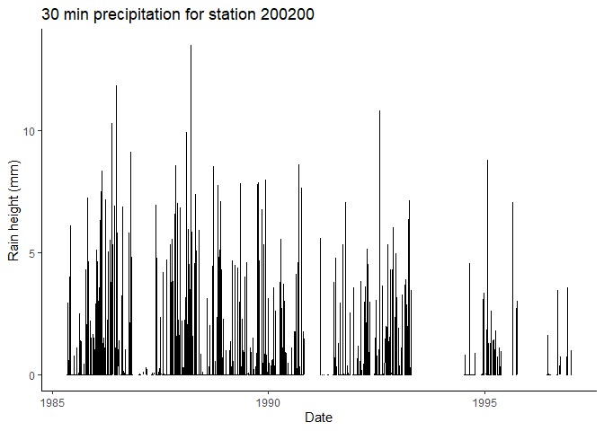

hydroscoper is an R interface to the Greek National Data Bank for Hydrological and Meteorological Information, Hydroscope. For more details checkout the package’s website and the vignettes:
-
An introduction to
hydroscoperwith details about the Hydroscope project and the package. -
Using
hydroscoper’s data sets with a simple example of how to use the package’s internal data sets.
Installation
Install the stable release from CRAN with:
install.packages("hydroscoper")You can install the development version from GitHub with:
# install.packages("devtools")
devtools::install_github("ropensci/hydroscoper")Using hydroscoper
The functions that are provided by hydroscoper are:
-
get_stations, get_timeseries, ..., etc.family functions, to retrieve tibbles with Hydroscope’s data for a given data source. -
get_data, to retrieve a tibble with time series’ values.
-
hydro_coords, to convert Hydroscope’s points’ raw format to a tibble. -
hydro_translateto translate various terms and names from Greek to English.
The data sets that are provided by hydroscoper are:
-
stationsa tibble with stations’ data from Hydroscope. -
timeseriesa tibble with time series’ data from Hydroscope. -
greece_bordersa tibble with the borders of Greece.
Example
This is a minimal example which shows how to get the station’s 200200 precipitation time series 56 from the kyy sub-domain.
Load libraries and get data:
library(hydroscoper)
library(tibble)
library(ggplot2)
ts_raw <- get_data(subdomain = "kyy", time_id = 56)
ts_raw
#> # A tibble: 147,519 × 3
#> date value comment
#> <dttm> <dbl> <chr>
#> 1 1985-05-06 08:00:00 0 1
#> 2 1985-05-06 08:30:00 0 1
#> 3 1985-05-06 09:00:00 0 1
#> 4 1985-05-06 09:30:00 0 1
#> 5 1985-05-06 10:00:00 0 1
#> 6 1985-05-06 10:30:00 0 1
#> 7 1985-05-06 11:00:00 0 1
#> 8 1985-05-06 11:30:00 0 1
#> 9 1985-05-06 12:00:00 0 1
#> 10 1985-05-06 12:30:00 0 1
#> # ℹ 147,509 more rowsLet’s create a plot:
ggplot(data = ts_raw, aes(x = date, y = value))+
geom_line()+
labs(title= "30 min precipitation for station 200200",
x="Date", y = "Rain height (mm)")+
theme_classic()
Meta
- Bug reports, suggestions, and code are welcome. Please see Contributing.
- License:
- All code is licensed MIT.
- All data are from the public data sources in
http://www.hydroscope.gr/.
- To cite
hydroscoperplease use:
Vantas Konstantinos, (2018). hydroscoper: R interface to the Greek National Data Bank for
Hydrological and Meteorological Information. Journal of Open Source Software,
3(23), 625 DOI:10.21105/joss.00625or the BibTeX entry:
@Article{kvantas2018,
author = {Konstantinos Vantas},
title = {{hydroscoper}: R interface to the Greek National Data Bank for Hydrological and Meteorological Information},
doi = {10.21105/joss.00625},
year = {2018},
month = {mar},
publisher = {The Open Journal},
volume = {2},
number = {23},
journal = {The Journal of Open Source Software}
}